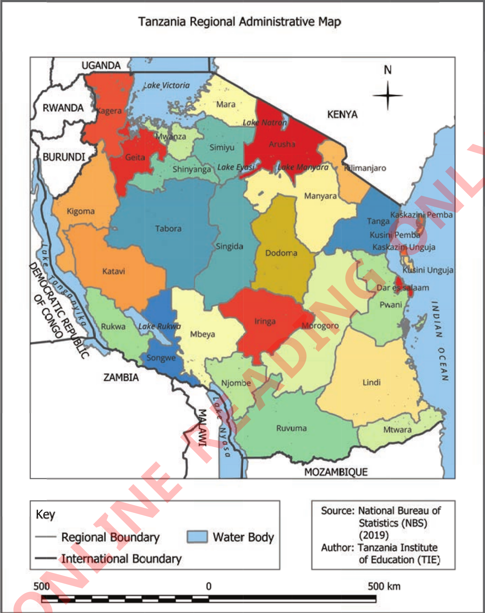

FOR ONLINE READING ONLY
Tanzania Regional Administrative Map
UGANDA
RWANDA
BURUNDI
KENYA
DEMOCRATIC REPUBLIC OF CONGO
ZAMBIA
MALAWI
MOZAMBIQUE
INDIAN OCEAN
N
Lake Victoria
Lake Natron
Lake Manyara
Lake Eyasi
Lake Rukwa
Kagera
Mwanza
Mara
Simiyu
Geita
Shinyanga
Arusha
Kilimanjaro
Kigoma
Katavi
Tabora
Singida
Dodoma
Tanga
Kaskazini Pemba
Kusini Pemba
Kaskazini Unguja
Kusini Unguja
Dar es Salaam
Pwani
Rukwa
Songwe
Mbeya
Iringa
Morogoro
Njombe
Ruvuma
Lindi
Mtwara
Key
Regional Boundary
International Boundary
Water Body
Source: National Bureau of Statistics (NBS) (2019)
Author: Tanzania Institute of Education (TIE)
500
0
500 km

Figure 2: Regional administrative boundaries
Road and railway maps
These maps provide important information about road and railway networks, such as highways and street roads, and important signs or symbols of a certain area as shown in Figure 3. They also show the distance between different locations and often provide information about petrol stations, restaurants, and hotels. Road and railway maps are important for drivers and travellers.